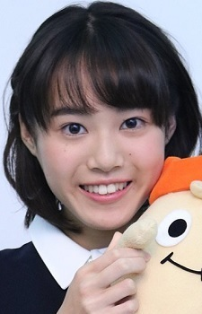
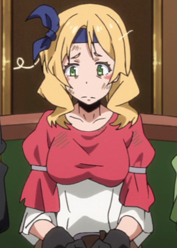

Akane Kumada is a Japanese voice actress. She is affiliated with Amuse. She was the winner of ANISONG STARS seiyuu audition out of 4,846.
- Gender: Female
- Birthday: February 23, 2000
- Hometown: Tokyo, Japan
- Hobbies: Cooking and Jazz Dance
- Skill: Koto

|
|---|
|  |
Akane Kumada is a Japanese voice actress. She is affiliated with Amuse. She was the winner of ANISONG STARS seiyuu audition out of 4,846.
|
|---|
|  | Elen | That Time I Got Reincarnated as a Slime | Elen is an adventurer and a member of Cobal's Party. She is a really loyal teammate and friend. She has selfishness and free-spirited personality. |
Go Back to Main Page |
Go Back to Homepage |
|
|
|
OR |
|